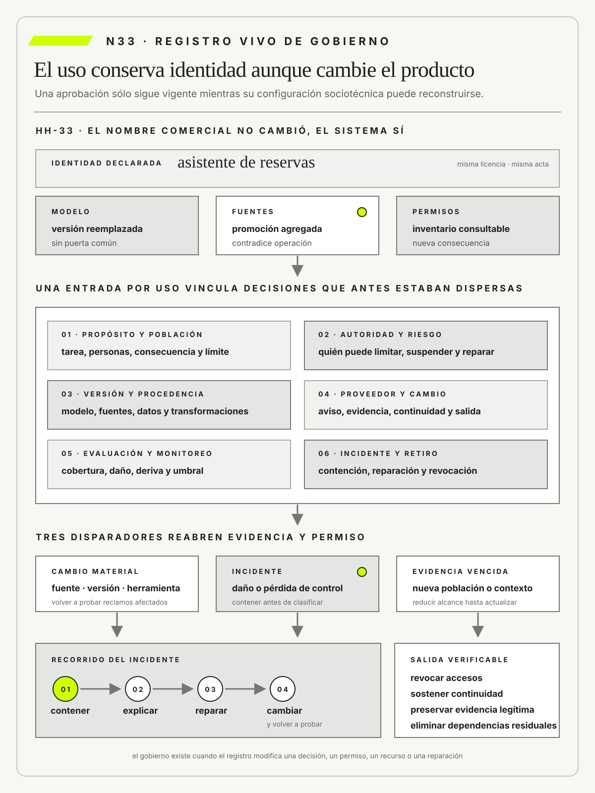

Gobierno vivo de IA: inventario, ownership, datos, proveedores, cambios, incidentes, reparación y retiro
N33
La aprobación de una inteligencia artificial pertenece a un uso verificable, no al nombre comercial de un modelo.
METSI · N33
Contenido
Gobierno vivo de IA: inventario, ownership, datos, proveedores, cambios, incidentes, reparación y retiro
Ruta de lectura: problema, distinciones, decisiones, prueba, transferencia y preparación.
•Referentes SIN NUM.
01Pregunta profesional
02El producto conservó el nombre y dejó de ser el sistema aprobado
03Hotel Horizonte: el nombre del producto no cambió, el sistema sí
04Tesis
05Del cierre anterior al nuevo avance
06Tradiciones y marcos utilizados en el argumento
07Movimiento 1 · Inventariar usos, fronteras y riesgos
08Movimiento 2 · Gobernar procedencia, proveedores, cambios y monitoreo
09Movimiento 3 · Responder incidentes, reparar y retirar
10Errores frecuentes
11Consecuencias profesionales
12Límites y tensiones
13De N33 a N34
14Síntesis
15Cinco píldoras para recordar
16Glosario esencial
17Preguntas de preparación
•Referencias base SIN NUM.
Una lectura previa para llegar al encuentro con preguntas, evidencia y una decisión revisable.
Nota. SIN NUM. identifica aparatos de orientación y referencia.
METSI · FCE-UBA
Referentes
Seis referentes y las obras principales utilizadas para construir N33.
01
Inioluwa Deborah Raji
Closing the AI Accountability Gap: Defining an End-to-End Framework for Internal Algorithmic AuditingProceedings of the 2020 Conference on Fairness, Accountability, and Transparency · 2020
Propone auditorías internas que convierten responsabilidad general en alcance, evidencia y acciones organizacionales.
Integra diseño, implementación, uso y gobierno bajo responsabilidades distribuidas pero no diluidas.
06
Cathy O’Neil
Weapons of Math DestructionCrown · 2016
Advierte cómo opacidad, escala y ausencia de apelación pueden institucionalizar decisiones dañinas.
N33 no resume estas fuentes ni las convierte en receta. Las pone en tensión para construir juicio profesional.
01METSI · N33 PROBLEMA
Pregunta profesional
¿Cómo gobernar sistemas de inteligencia artificial que cambian durante su uso y dependen de datos, modelos y proveedores distribuidos?
El permiso pierde vigencia si cambia el uso, la versión, el proveedor, la población o el contexto.
02METSI · N33 PROBLEMA
El producto conservó el nombre y dejó de ser el sistema aprobado
Una empresa utiliza un servicio de inteligencia artificial para ordenar postulaciones laborales y preparar preguntas de entrevista. El comité de riesgo aprobó un piloto con una versión, un conjunto de datos y permisos limitados. Cuatro meses después, el proveedor mantiene el mismo nombre comercial, pero cambia el modelo base; Recursos Humanos agrega perfiles históricos y el equipo técnico habilita una herramienta para consultar redes profesionales. Ningún cambio atraviesa una nueva aprobación.
El primer indicio aparece cuando una candidata solicita revisar una exclusión y nadie puede explicar qué configuración intervino. El contrato identifica al proveedor, el inventario registra una licencia y el acta conserva resultados del piloto. Ningún artefacto describe el uso vigente: propósito, fuentes, versión, instrucciones, herramientas, responsables, población, evaluación y vía de reparación están distribuidos entre sistemas que se actualizan con ritmos diferentes.
La investigación evita atribuir el problema sólo al modelo. Una explicación señala el cambio de versión. Otra observa que los perfiles históricos incorporaron criterios que la organización decía querer modificar. Una tercera identifica expansión de agencia: el sistema dejó de ordenar información provista y empezó a obtener nuevos datos. También puede haber una falla de gobierno independiente del desempeño: aunque cada salida fuera correcta, nadie autorizó esa nueva frontera ni informó a las personas afectadas.
Un inventario útil no enumera productos. Registra usos sociotécnicos concretos. Para cada uno vincula propósito, población, responsable con autoridad, datos, modelo, proveedor, permisos, interfaces, evaluación vigente, incidentes, obligaciones, mecanismo de contestación y condición de retiro. Dos equipos que usan el mismo servicio para decisiones distintas necesitan entradas separadas; un único uso que cambia de fuente o capacidad debe activar revisión.
El comité define disparadores de cambio material. No todo ajuste exige la misma evaluación, pero ninguno queda invisible. Cambiar modelo, propósito, fuente, permiso, población o grado de autonomía reabre la evidencia relacionada. Una modificación del proveedor puede bloquearse, limitarse o aceptarse de modo provisional. La trazabilidad debe permitir saber qué configuración rigió para una decisión pasada, incluso si ya no está disponible.
La gobernanza también debe actuar durante el daño. La candidata recibe una vía de revisión con capacidad real de corregir, no sólo una explicación genérica. La organización suspende el uso ampliado, reconstruye decisiones afectadas y separa incidentes técnicos de incidentes sobre derechos, trato y oportunidad. El retiro incluye continuidad operativa, conservación proporcional de evidencia y una alternativa para las personas en proceso.
Las orientaciones éticas y los marcos de riesgo ayudan a formular preguntas, pero no sustituyen obligaciones jurídicas ni decisiones institucionales. Un código publicado en la intranet no controla cambios de proveedor, no asigna autoridad y no repara a una persona. El gobierno se vuelve vivo cuando sus registros y puertas modifican configuraciones, prácticas e incentivos antes y después del incidente.
N33 cierra el Bloque G. Recibe de N31 el análisis de pertinencia y de N32 la evidencia de evaluación, y los transforma en una capacidad institucional para sostener, limitar o retirar usos concretos. La aprobación deja de ser un sello sobre un producto y pasa a ser una decisión revisable sobre un sistema que cambia.
03METSI · N33 PROBLEMA
Hotel Horizonte: el nombre del producto no cambió, el sistema sí
HH-33 comienza dos meses después de la evaluación de HH-32. El proveedor mantiene el mismo nombre comercial, pero cambia el modelo base; Camila Duarte agrega documentos promocionales a la fuente de consulta y Federico Müller habilita una herramienta para consultar inventario. Cada modificación parece menor. Juntas cambian qué responde el asistente, qué datos procesa y qué consecuencias puede producir. El acta de aprobación conserva una configuración que ya no existe.
Hotel Horizonte conserva una misma escena para que cambie el análisis y no el caso.
Lucía Ferreyra reporta un consejo equivocado sobre una habitación accesible. Mariela Benítez identifica que la fuente comercial contradice la condición operativa. Ricardo Sosa intenta reconstruir el episodio y encuentra versión, documentos y permisos distribuidos entre proveedor, repositorio y consola. El incidente no puede asignarse únicamente al modelo: emerge del sistema sociotécnico y de sus cambios sin una puerta común.
El registro HH-33 se organiza por uso, no sólo por proveedor. Incluye propósito, población, responsable con autoridad, versión, fuentes, permisos, evaluación vigente, incidentes, obligaciones contractuales, condición de retiro y mecanismo de reparación. Elena Acosta suspende las acciones automáticas hasta repetir los casos críticos y exige notificación de cambios del proveedor. La persona afectada recibe explicación operativa y una vía concreta de corrección.
La revisión se activa por cambio material, incidente, nueva población o vencimiento de evidencia. Para el contexto argentino, la decisión toma como guía las recomendaciones nacionales para proyectos de IA en materia de trazabilidad, protección de datos, no discriminación y atención a las personas, y distingue esas orientaciones de las obligaciones jurídicas aplicables según fuente, actor y jurisdicción. HH-34 deberá integrar este gobierno con el recorrido completo de la intervención y demostrar que las decisiones no quedaron aisladas en documentos separados.
04METSI · N33 PROBLEMA
Tesis
La aprobación de un sistema de inteligencia artificial pertenece a un uso, una población y una configuración sociotécnica verificable, no al nombre comercial de un modelo. Si cambian propósito, fuentes, versión, permisos, proveedor, autonomía o contexto, también puede cambiar la evidencia que justificaba el permiso. El gobierno vivo conecta inventario, responsabilidad con autoridad, procedencia, evaluación, monitoreo, incidentes, contestación, reparación y retiro. Su calidad no se mide por políticas publicadas, sino por la capacidad de detectar un cambio material, suspender exposición, reconstruir decisiones y corregir consecuencias antes de que el sistema aprobado exista sólo en un acta antigua.
METSI · N33 · MAPA DE DECISIÓN
La aprobación pertenece a un uso y una configuración sociotécnica verificable; cambios de modelo, fuentes, permisos, población o contexto reabren evidencia, autoridad, reparación y retiro.

El registro mantiene unido propósito, configuración, autoridad, evaluación, incidentes y salida, y reabre el permiso cuando cambia la frontera.
05METSI · N33 PROBLEMA
Del cierre anterior al nuevo avance
N32 produjo evidencia de evaluación y un nivel de autonomía condicionado. Ese permiso pierde fundamento si cambia cualquier parte del sistema sociotécnico sin que la organización lo detecte. N33 crea la capacidad institucional para reconocer esos cambios y reabrir la decisión correspondiente.
Inventario, responsabilidad asignada, proveedores, monitoreo, incidentes, reparación y retiro forman un gobierno vivo cuando modifican usos reales. N34 integrará después ese gobierno con los problemas, evidencias, alternativas y operaciones construidos durante el resto de la materia.
06METSI · N33 DISTINCIONES
Tradiciones y marcos utilizados en el argumento
Tabassi, E. organiza en el AI Risk Management Framework de NIST un gobierno de IA que asigna responsabilidades y mantiene el riesgo conectado con contexto, medición y acciones de gestión durante el ciclo de vida.
Autio, C. et al. vuelven explícitos en el perfil de NIST para IA generativa riesgos de procedencia, confabulación, seguridad, privacidad y dependencia de proveedores que requieren controles continuos.
ISO/IEC 42001 exige que la política, los objetivos, las responsabilidades, la evaluación y la mejora formen un sistema de gestión y no una colección de declaraciones independientes.
La Disposición 2/2023 de la Subsecretaría de Tecnologías de la Información aporta el encuadre argentino de trazabilidad, protección de datos, no discriminación, equipos multidisciplinarios y atención a las personas.
El Reglamento de IA de la Unión Europea distribuye obligaciones entre proveedores y responsables del despliegue según el uso y el riesgo, y exige conservar condiciones de supervisión y trazabilidad.
El Código de Buenas Prácticas para IA de propósito general publicado por la Comisión Europea en 2025 ofrece una vía voluntaria para demostrar cumplimiento. Sus capítulos de transparencia y derechos de autor se dirigen a proveedores de modelos de propósito general, mientras que el capítulo de seguridad se concentra en proveedores de modelos con riesgo sistémico. La adhesión no vuelve idénticas obligaciones que dependen del tipo de modelo y del papel de cada actor.
Raji, I. D. et al. muestran que una auditoría interna eficaz necesita roles, documentación, revisión y capacidad organizacional para actuar sobre los hallazgos.
Mitchell, M. et al. documentan desempeño, usos previstos y límites de modelos.
Gebru, T. et al. documentan motivación, composición, recolección y uso de datos.
Dignum, V. distribuye responsabilidad entre diseño, organización, uso y supervisión sin permitir que esa distribución diluya la rendición de cuentas.
Elish, M. C. muestra cómo una organización puede ubicar a una persona como zona de deformación moral: visible para recibir culpa, pero sin autoridad efectiva para controlar el sistema.
Crawford, K. sitúa la IA dentro de cadenas materiales, laborales e institucionales que un inventario limitado a modelos no llega a representar.
O’Neil, C. muestra que opacidad, escala y ausencia de apelación pueden convertir una medida aparentemente neutral en una infraestructura persistente de daño.
07METSI · N33 DISTINCIONES
Movimiento 1 · Inventariar usos, fronteras y riesgos
Inventario de sistemas de IA
Un inventario de IA registra usos concretos, no sólo productos, licencias o modelos adquiridos. Cada entrada debe identificar propósito, población, responsable, componentes, datos, herramientas, nivel de autonomía, consecuencias y estado del ciclo de vida. La unidad inventariada cambia cuando el mismo modelo interviene en otra tarea o adquiere permisos diferentes.
Hotel Horizonte identifica cada asistente por tarea, versión y permisos. El servicio que responde preguntas sobre políticas constituye una entrada distinta del agente que modifica reservas, aunque ambos usen el mismo proveedor. El registro vincula a Federico Müller como responsable técnico, a la autoridad de negocio correspondiente y a Lucía Ferreyra como participante de la operación.
El inventario pierde valor si queda desactualizado o no incluye pruebas informales. Las fechas de revisión, dependencias y condiciones de retiro permiten descubrir usos huérfanos. Toda incorporación, cambio material o baja debe modificar el registro, de modo que Elena Acosta pueda conocer qué capacidades actúan sobre la promesa del hotel y quién puede detenerlas.
El descubrimiento combina compras, accesos, integraciones, entrevistas y observación del trabajo. Un uso puede nacer con una cuenta individual o una función incluida en otra aplicación y no aparecer en el registro contractual. El objetivo inicial no es sancionar esa práctica, sino conocerla, clasificarla y decidir si puede continuar. Las áreas confirman periódicamente sus entradas y una señal técnica identifica llamadas sin uso asociado. La ausencia de actividad también se revisa, porque una integración olvidada puede conservar permisos y datos aunque nadie la supervise.
Frontera del sistema
La frontera de un sistema de IA comprende modelo, datos, instrucciones, herramientas, interfaz, personas, reglas y proceso donde la salida adquiere efecto. No coincide con la API del proveedor ni con el código administrado por Tecnología. Delimitarla define qué causas, evidencias y autoridades entran en una evaluación o incidente.
El registro del hotel abarca la decisión de Recepción y sus fuentes. Una recomendación puede originarse en un modelo externo, una política redactada por Comercial, un estado del PMS y la forma en que la interfaz presenta la opción. Si Lucía acepta por una señal visual ambigua, excluir la interfaz del análisis atribuiría al modelo un mecanismo que pertenece al sistema completo.
La frontera es una hipótesis revisable. Un episodio puede revelar que Housekeeping, una cerradura o un contrato de canal formaban parte de la consecuencia aunque no estuvieran en el diagrama inicial. Ampliarla no significa gobernar todo con igual intensidad, sino impedir que una división organizacional o contractual esconda una dependencia material.
Cada elemento entra por el mecanismo que puede modificar. Una política recuperada condiciona la respuesta; la interfaz influye en aceptación; una métrica puede presionar a decidir rápido; una persona repara o amplifica el efecto. El mapa distingue control directo, influencia y contexto para no atribuir la misma responsabilidad a todos. También señala aquello que permanece externo pero condiciona el riesgo. Cuando la frontera cambia, se revisan evidencias y permisos afectados, no se conserva una aprobación basada en otro sistema.
Responsabilidad asignada y rendición de cuentas
La responsabilidad asignada designa la capacidad efectiva de orientar, limitar y sostener un sistema durante su ciclo de vida. La rendición de cuentas exige que una autoridad pueda explicar decisiones, responder por consecuencias y ordenar reparación. Ninguna de las dos se satisface nombrando una persona sin presupuesto, información o poder para suspender el uso.
En Hotel Horizonte, una responsable puede detener ofertas automáticas. Federico controla despliegues y accesos, Camila Duarte gobierna condiciones comerciales, Ricardo Sosa responde por la operación y Elena acepta el riesgo residual. El expediente explicita cómo se resuelven desacuerdos y quién decide cuando una mejora comercial amenaza una condición de servicio.
La responsabilidad sigue en la organización aunque el modelo sea provisto por un tercero. También debe existir reemplazo ante ausencias y una ruta para escalar desde Recepción. Si todos participan pero nadie puede ordenar un cambio, hay coordinación sin rendición de cuentas. Si una sola persona concentra decisiones que no puede observar, hay autoridad formal sin gobierno operativo.
La responsabilidad asignada se expresa mediante derechos de decisión. La persona puede exigir una prueba, limitar población, suspender una herramienta y ordenar reparación, y dispone de información y presupuesto para hacerlo. La rendición de cuentas agrega explicación ante otras autoridades y personas afectadas. En HH-33 esas funciones se distribuyen sin fragmentar la consecuencia: Federico responde por controles técnicos, Ricardo por capacidad operacional y Elena por el riesgo institucional aceptado. Un desacuerdo tiene una ruta y queda registrado.
Clasificación de riesgo
La clasificación de riesgo vincula un uso situado y sus consecuencias con obligaciones proporcionales. No se deriva exclusivamente del tamaño del modelo, su técnica o una etiqueta comercial. Importan la población, la gravedad del daño, la reversibilidad, la autonomía, la exposición y la posibilidad real de cuestionar el resultado.
Responder preguntas y modificar reservas reciben niveles distintos en el hotel. El primer uso puede limitarse a recuperar una política y redactar un borrador; el segundo altera inventario, precio o accesibilidad. La clasificación determina evidencia previa, aprobación, monitoreo, intervención humana y condiciones de retiro para cada capacidad.
Una categoría inicial no debe volverse permanente. Cambios de herramienta, población o propósito pueden elevar el riesgo sin modificar el nombre del proyecto. Las clasificaciones regulatorias y marcos profesionales orientan el análisis, pero no sustituyen el juicio sobre el episodio local. El registro conserva fecha, razones y autoridad para que cualquier reclasificación sea examinable.
La clasificación se vincula con obligaciones concretas y no sólo con colores. Un nivel puede exigir evaluación externa, supervisión reforzada, aviso, registro más detallado o prohibición de ciertas acciones. Si dos usos reciben la misma categoría pero consecuencias diferentes, pueden conservar controles distintos. El equipo prueba escenarios que desafían el nivel asignado y registra el riesgo residual. Una categoría baja no elimina monitoreo; una alta no vuelve legítimo un propósito indebido. Primero se decide si el uso debe existir y luego cómo gobernarlo.
Los marcos no clasifican de la misma manera ni poseen la misma fuerza. El AI RMF de NIST organiza una práctica voluntaria y contextual para mapear, medir y tratar riesgo. El Reglamento de IA de la Unión Europea asigna obligaciones jurídicas según actor, categoría y uso previsto. La Disposición argentina 2/2023 aprueba recomendaciones para proyectos de IA fiable y orienta trazabilidad, datos, responsabilidades y atención a personas, pero no convierte automáticamente un uso hotelero en una categoría europea. ISO/IEC 42001, por su parte, permite auditar si existe un sistema de gestión capaz de sostener decisiones, sin declarar por sí sola que una aplicación concreta resulta aceptable.
HH-33 conserva esas diferencias en una tabla de correspondencias. Para la función que sólo redacta borradores, NIST ayuda a identificar riesgo contextual y la recomendación argentina orienta el examen de alternativas, datos y destinatarios. Para la función que modifica reservas, se analiza además si alguna obligación sectorial o jurisdiccional cambia la evidencia exigible. La tabla nunca traduce una categoría en otra como si fueran equivalentes. Registra qué requisito surge de una norma, qué control se adopta como buena práctica y qué decisión pertenece al hotel. Si el alcance legal es incierto, la autoridad competente resuelve antes de ampliar exposición y la operación conserva el límite más seguro.
Esta separación evita dos errores simétricos. El primero consiste en usar una categoría regulatoria como prueba de seguridad local. El segundo consiste en tratar todo marco como una recomendación opcional porque el caso no encaja literalmente en una etiqueta. La decisión profesional identifica obligación, propósito y evidencia de cada fuente. Después pregunta qué episodio podría mostrar que la clasificación quedó vieja. Una nueva población, un permiso de escritura o una vía de reparación que dejó de funcionar pueden elevar la respuesta requerida aunque la ficha conserve el mismo color.
08METSI · N33 DECISIONES
Movimiento 2 · Gobernar procedencia, proveedores, cambios y monitoreo
Procedencia de datos y modelos
La procedencia reconstruye origen, permiso, transformación, versión y uso de datos, modelos y documentos. Nombrar una fuente no alcanza: debe poder seguirse cómo un elemento ingresó al sistema, qué modificaciones recibió y en qué salida participó. Esta cadena permite reproducir decisiones y localizar cambios que alteran comportamiento.
Dos registros del trabajo real permiten contrastar la decisión con sus condiciones de operación.
Cada fragmento recuperado por el asistente conserva documento y vigencia. El hotel registra la política original, la fecha, el segmento utilizado y la versión del índice que lo seleccionó. Si una respuesta combina una condición comercial con un procedimiento operativo, ambas procedencias permanecen visibles y no se funden en una autoridad inexistente.
Procedencia conocida no demuestra calidad, licitud ni pertinencia. Un documento auténtico puede estar desactualizado y un conjunto autorizado puede representar mal a cierta población. Por eso Federico verifica integridad técnica mientras Camila, Ricardo y Lucía evalúan significado y uso. Una brecha obliga a limitar la capacidad afectada hasta reconstruir evidencia suficiente.
La cadena necesita granularidad proporcional. Para un documento se conservan versión y fragmento; para un conjunto de entrenamiento, origen, permisos, período, transformaciones y exclusiones; para un modelo externo, identificador y condiciones declaradas por el proveedor. Cuando una parte no puede observarse, se registra como incertidumbre y se ajusta el uso. No se completan campos con inferencias presentadas como hechos. La procedencia permite responder una disputa y retirar derivados cuando cambia una fuente, pero sólo si se mantiene durante todo el ciclo.
Ricaurte muestra que gobernar procedencia exige algo más que rastrear archivos. Los datos se producen dentro de relaciones que deciden qué categorías existen, quién puede describir a quién y qué infraestructura concentra la capacidad de conocer. Un inventario técnicamente completo puede mantener una dependencia epistémica si la organización no puede examinar la representación, incorporar saber local ni disputar una clasificación. La gobernanza debe registrar esas limitaciones como parte del riesgo y no esconderlas bajo el nombre del proveedor.
Hotel Horizonte pregunta quién definió las categorías utilizadas por el asistente, qué idiomas y prácticas cubren, qué grupos aparecen sólo como excepciones y quién puede corregirlas. Cuando el proveedor no permite esa evaluación, Elena reduce alcance o exige una ruta independiente. La respuesta no consiste en localizar todos los datos dentro del país ni en presumir que una fuente regional es suficiente. Consiste en conservar capacidad institucional y social para discutir qué conocimiento se usa, con qué propósito y frente a qué actores se rinden cuentas.
Gobierno de proveedores
Gobernar proveedores implica definir obligaciones sobre evidencia, seguridad, cambios, acceso, incidentes, continuidad y salida. Comprar un servicio no transfiere la responsabilidad por las decisiones tomadas con él. El contrato debe sostener los controles que la organización promete y reconocer aquello que el proveedor no permite observar.
Hotel Horizonte exige notificación de cambios materiales. También acuerda versiones, conservación de registros, tiempos de aviso, tratamiento de datos y asistencia para investigar incidentes. Si el proveedor puede reemplazar el modelo sin informar, cualquier evaluación previa pierde alcance y Federico no puede explicar una variación de comportamiento.
El poder contractual tiene límites y debe figurar como riesgo. Cuando no hay acceso a evidencia necesaria, Elena puede reducir permisos, restringir poblaciones, añadir una prueba independiente o elegir otra solución. Una cláusula no es un control si nadie verifica su cumplimiento ni existe una alternativa viable ante el incumplimiento.
Compras, Asuntos Legales, Tecnología y el área usuaria conservan responsabilidades distintas, con una autoridad definida para resolver incompatibilidades.
La evaluación del proveedor separa su capacidad general del uso concreto del hotel. Certificaciones, informes y documentación aportan evidencia sobre procesos, pero no prueban la respuesta ante las políticas, herramientas y poblaciones locales. HH-33 exige un canal de incidentes, tiempos de notificación, derecho a investigar y una prueba de salida. Si alguna obligación no puede obtenerse, se transforma en un límite operativo visible. La comparación de alternativas incluye el costo de migración y la dependencia de funciones exclusivas, no sólo precio y precisión declarada.
La relación contractual se prueba con un cambio y con una salida, no con la lectura de cláusulas. El hotel solicita al proveedor una modificación simulada del modelo y verifica si el aviso permite localizar usos, repetir reclamos críticos y decidir antes de que la nueva versión actúe. Luego pide exportar configuración, registros y datos necesarios para una transición. Si el proveedor informa tarde, entrega un identificador ambiguo o conserva una integración residual, aparece una brecha operacional aunque el contrato use la expresión correcta.
NIST y ISO/IEC 42001 aportan aquí lentes complementarias. NIST pregunta cómo el tercero modifica el mapa de riesgo y qué capacidad conserva quien despliega. ISO exige insertar selección, evaluación y seguimiento del proveedor dentro del sistema de gestión. El Código europeo para IA de propósito general aporta compromisos para quienes adhieren, pero sus evidencias no sustituyen la evaluación situada del hotel y su capítulo de seguridad no se presume aplicable a todo modelo. La comparación impide presentar una certificación, una firma voluntaria y una obligación legal como sellos intercambiables.
La negociación conserva además asimetría de poder. Un hotel puede no obtener acceso al conjunto de entrenamiento ni fijar una versión. Esa negativa no se rellena con confianza: se documenta como incertidumbre y cambia permisos, población o alternativa. Camila evalúa continuidad comercial, Federico la capacidad técnica de detectar variación, Ricardo el costo de sostener una ruta manual y Elena decide cuánto riesgo residual acepta. La responsabilidad queda distribuida por conocimiento y autoridad, pero la organización no deriva al proveedor su obligación frente al huésped.
Control de cambios
El control de cambios identifica modificaciones capaces de alterar propósito, desempeño, exposición o responsabilidad. No toda actualización requiere la misma revisión, pero tampoco todo cambio presentado como técnico es menor. Una nueva fuente, instrucción, herramienta, interfaz o permiso puede modificar la frontera aunque el modelo permanezca igual.
En el hotel, agregar una herramienta dispara pruebas de permisos y consecuencias. El cambio se describe, clasifica y vincula con los usos afectados. Antes de habilitarlo, se repiten casos críticos, se verifica la ruta de reparación y se informa a Recepción. La aprobación conserva quién decidió, sobre qué evidencia y con qué condición de reversión.
La materialidad se juzga por efecto, no por cantidad de líneas modificadas. Una palabra en la instrucción puede ampliar autoridad; una actualización extensa puede no cambiar el uso. Si el proveedor impide fijar versiones, el registro debe señalar esa incertidumbre y el monitoreo debe compensarla. Los cambios silenciosos constituyen un defecto de gobierno.
Una matriz relaciona tipos de cambio con reclamos que deben volver a probarse. Modificar una fuente afecta vigencia y fundamentación; agregar una herramienta, permisos y consecuencias; rediseñar la interfaz, control humano; ampliar población, cobertura y desigualdad. Esta relación evita repetir todo sin criterio y también omitir una evaluación pertinente. Las modificaciones urgentes conservan una autorización temporal, observación reforzada y reconciliación posterior. Si no pueden revertirse, la puerta eleva evidencia y reduce exposición antes de aplicar.
Monitoreo de IA desplegada
El monitoreo de IA desplegada observa desempeño, uso, distribución, deriva y consecuencias en la operación. Latencia y disponibilidad son necesarias, pero no revelan si una respuesta sigue siendo correcta, quién recibe errores ni cuánto trabajo demanda repararlos. Las señales deben corresponder con las promesas y riesgos del uso inventariado.
Hotel Horizonte sigue corrección por población, abstenciones, frecuencia de escalamiento, cambios de reserva y reparaciones. También relaciona esas señales con versión, canal y turno. Un descenso de reclamos puede indicar mejora, pero también abandono del canal; una mayor abstención puede ser prudencia o pérdida de cobertura. Los episodios permiten interpretar la serie.
Toda métrica necesita umbral, responsable y respuesta. Federico investiga deriva, Lucía aporta evidencia operacional y Elena decide si se adapta, limita o suspende el uso. Si el tablero sólo muestra degradación después de producida, existe observación sin control. El monitoreo debe cerrar el circuito con una decisión registrada.
La deriva se separa en datos, comportamiento, uso y consecuencia. Una distribución distinta no siempre reduce calidad; un desempeño estable puede ocultar que las personas usan la salida para otra tarea. HH-33 compara indicadores con episodios y revisa cambios de abstención, corrección y reparación. Las señales cualitativas de Recepción pueden activar una muestra dirigida antes de alcanzar volumen. El monitoreo respeta minimización y no captura conversaciones completas si basta una clasificación protegida y un vínculo al expediente.
09METSI · N33 PRUEBA
Movimiento 3 · Responder incidentes, reparar y retirar
Incidente de IA
Un incidente de IA es un daño, una falla relevante o una pérdida de control vinculada con el sistema sociotécnico. No requiere una caída del servicio ni una acción maliciosa. Puede consistir en discriminación, divulgación, promesa indebida, imposibilidad de reparación o comportamiento que excede la autoridad concedida.
Una respuesta inventada provoca una compensación improcedente en Hotel Horizonte. La prioridad inicial es contener el efecto, asistir al huésped y preservar consulta, fuentes, salida, acciones y versiones. La investigación distingue si falló la recuperación, la instrucción, el modelo, la interfaz, la supervisión o una combinación de esos elementos.
La clasificación no debe demorar la protección. Luego se decide qué usos comparten la vulnerabilidad y qué controles deben cambiar antes de reanudar. El aprendizaje alcanza contrato, entrenamiento y política, no sólo código. Cerrar el ticket técnico sin reparar la consecuencia dejaría abierto el incidente organizacional.
También se comunica el episodio a quienes puedan estar afectados cuando el alcance no puede descartarse con la evidencia disponible.
La investigación preserva instrucción, fuentes, versión, llamadas a herramientas, interfaz y decisión humana con una cadena de custodia proporcionada. No supone que el último componente observado causó el daño. Se formulan explicaciones rivales y se busca qué control debió prevenir, detectar o contener. La comunicación evita afirmar certezas prematuras y actualiza a las personas cuando cambia el alcance. Reanudar exige repetir el escenario y verificar reparación, no sólo desplegar una corrección técnica.
Contestabilidad y reparación
La contestabilidad ofrece a una persona información comprensible, una vía accesible para objetar y una revisión por autoridad competente. La reparación restituye, compensa o corrige la consecuencia cuando corresponde. Un formulario sin plazo, seguimiento o poder decisorio produce apariencia de revisión, no una garantía efectiva.
El huésped corrige un dato y recupera su reserva. Para que eso ocurra, Lucía debe conocer qué decidió el sistema, qué evidencia usó y qué acciones puede revertir. El reclamo queda vinculado con la salida original y con la corrección realizada, de modo que el hotel pueda reparar el caso y aprender si otros episodios comparten la misma falla.
No toda explicación necesita revelar secretos técnicos, pero debe permitir discutir la razón material de la decisión. Revisar sin reparar conserva el daño; reparar sin registrar impide detectar patrones. El tiempo de respuesta y la carga impuesta a quien reclama forman parte de la evaluación del mecanismo.
La vía de objeción debe ser accesible desde el mismo recorrido y no exigir conocer que intervino IA. Identifica una autoridad distinta cuando corresponde, informa plazo y conserva seguimiento. La revisión accede a evidencia suficiente para modificar el resultado y puede reconocer límites del sistema, no sólo verificar que el procedimiento se ejecutó. Los casos se agrupan para detectar patrones sin borrar la reparación individual. Una tasa baja de reclamos no prueba equidad si el mecanismo es difícil de encontrar o usar.
O’Neil permite reconocer que opacidad, escala y falta de apelación pueden estabilizar daño aun cuando cada salida parezca menor. Dignum agrega que distribuir tareas entre diseño, proveedor y operación no debe diluir quién responde. Elish advierte un límite adicional: ubicar a Lucía como revisora visible puede transformarla en receptora de culpa si no dispone de tiempo, evidencia y facultad para corregir. Estas lentes conducen a pruebas distintas. Se mide si el canal puede encontrarse, si la revisión cambia el estado y si la persona revisora puede ordenar reparación sin pedir autorización a quien produjo la decisión cuestionada.
HH-33 ensaya tres reclamos equivalentes por web, teléfono y mostrador. El equipo compara información recibida, tiempo, carga y resultado, y observa si una persona con necesidad de accesibilidad enfrenta pasos adicionales. Un reclamo resuelto sólo en el canal donde interviene Lucía revela dependencia y no una garantía institucional. La reparación se considera cerrada cuando el estado fue restituido, la persona fue informada, el efecto residual quedó evaluado y el mecanismo que produjo el daño ingresó al control de cambios. Si sólo se corrige la reserva, el caso individual mejora pero el sistema conserva la causa.
Retiro y salida
El retiro desactiva una capacidad sin perder continuidad operativa, evidencia necesaria ni derechos de las personas afectadas. No equivale a cancelar una licencia. Deben planificarse revocación de accesos, conservación o eliminación de datos, reemplazo del servicio, comunicación y tratamiento de decisiones todavía abiertas.
Cuando el hotel retira un asistente, revoca herramientas y preserva los registros exigidos para reclamos e investigación. El procedimiento identifica qué reservas quedan en transición, qué ruta manual las atiende y cómo se evita que una integración residual continúe ejecutando. Ricardo valida continuidad y Federico comprueba la baja técnica.
La dependencia del proveedor puede volver inviable una salida prometida. Formatos cerrados, datos no exportables o conocimiento operativo perdido aumentan el costo de retiro. Esas condiciones deben evaluarse antes de adoptar y probarse periódicamente. Una capacidad que no puede abandonarse de manera segura requiere menor exposición desde el inicio.
La prueba de salida verifica tiempos y responsabilidades en la práctica, porque un procedimiento contractual puede fallar frente a una transición real.
El retiro distingue apagar nuevas acciones, resolver casos en curso y cerrar dependencias residuales. Cada etapa tiene señal y autoridad. Los datos se conservan sólo por una finalidad legítima y con plazos; aquello que debe eliminarse se verifica también en copias y proveedores. La alternativa manual recibe recursos antes de la baja para evitar que el costo recaiga en Recepción. Después se controla que ninguna cuenta, tarea programada o integración continúe operando con una versión huérfana.
Sistema de gestión de IA
Un sistema de gestión de IA integra política, roles, procesos, evidencia y mejora continua para gobernar usos concretos. No se reduce a un comité, un código ético o una certificación. Su eficacia se observa en decisiones repetibles sobre inventario, riesgo, cambio, incidentes, reparación y retiro.
Hotel Horizonte revisa inventario, incidentes y cambios en una cadencia común. Los responsables llevan evidencia de sus usos, las personas de operación presentan episodios y Elena resuelve excepciones y recursos. Las decisiones actualizan controles y vuelven a la operación; una reunión que sólo recibe tableros no constituye un ciclo de gestión.
Formalizar puede producir burocracia si todos los usos reciben el mismo trámite o si los documentos no modifican acciones. La proporcionalidad concentra esfuerzo donde las consecuencias lo exigen. El sistema permanece vivo cuando puede detectar un uso no registrado, responder a una señal, asignar autoridad y demostrar qué aprendió de la decisión anterior.
La mejora continua necesita evidencia sobre el propio gobierno. El hotel mide tiempo para registrar, responder y retirar, cantidad de excepciones vencidas y acciones cuyo efecto fue verificado. No premia cantidad de reuniones o formularios. Las auditorías seleccionan usos y reconstruyen decisiones de punta a punta; sus hallazgos modifican controles y recursos. La dirección revisa también incentivos que empujan a ocultar incidentes o ampliar funciones fuera del alcance aprobado. Un sistema de gestión eficaz vuelve más rápida la decisión bien fundada, no simplemente más documentada.
Raji y sus coautores muestran que una auditoría interna sólo cierra la brecha de responsabilidad cuando la organización puede actuar sobre sus hallazgos. Mitchell y sus coautores aportan documentación de desempeño, uso previsto y límites del modelo; Gebru y sus coautores hacen examinables origen, composición y decisiones sobre datos. Esos artefactos responden preguntas diferentes. Una model card no prueba licitud de datos, una datasheet no demuestra desempeño del uso y una auditoría no reemplaza a la autoridad que debe limitarlo. HH-33 los enlaza con versión, población, decisión y reparación para que ninguno funcione como certificado aislado.
ISO/IEC 42001 estructura política, objetivos, roles, evaluación y mejora como un sistema repetible. El AI RMF de NIST permite comprobar si ese sistema sigue mapeando y tratando el riesgo concreto cuando cambia el contexto. La recomendación argentina añade preguntas sobre destinatarios, datos, trazabilidad y equipos multidisciplinarios relevantes para la decisión local. El hotel prueba la integración recorriendo una objeción desde Recepción hasta Dirección y de regreso a la operación. Si la revisión identifica una brecha pero presupuesto, permisos o contrato no cambian, existe aprendizaje documental sin gobierno vivo.
La eficacia del sistema se revisa también contra una explicación rival. Una reducción de incidentes puede reflejar mejores controles, menor uso o menor disposición a reclamar. Por eso el tablero combina tasas con exposición, episodios y accesibilidad del canal. La auditoría selecciona casos favorables y adversos, incluye a quienes soportan trabajo de reparación y conserva desacuerdos. La mejora se acredita cuando una decisión, un recurso o una frontera cambia y luego se observa su efecto. Esta exigencia evita que una cadencia de comités sea confundida con capacidad institucional.
Instrumento HH-33: registro vivo de gobierno de IA
HH-33 conserva la identidad operativa de cada uso de IA a través de proveedores, versiones y cambios. El registro es vivo porque una aprobación inicial pierde validez cuando cambia la frontera, la población, la evidencia o la capacidad de reparación.
Uso y propósito. Nombrar la tarea autorizada y la decisión que el sistema puede o no puede influir.
Población y consecuencia. Delimitar exposición, grupos afectados, derechos comprometidos y posibilidad de reparación.
Responsable con autoridad. Asignar autoridad y recursos para limitar, suspender, investigar y retirar el uso.
Riesgo. Clasificar el uso por consecuencia y contexto, con fundamento y fecha de revisión.
Datos y modelos. Documentar procedencia, límites conocidos, versión y transformaciones que afectan la salida.
Proveedor. Establecer notificación de cambios, acceso a evidencia, incidentes, continuidad y salida.
Versión y cambio. Vincular configuración desplegada con evaluación, aprobación y período efectivo.
Evaluación. Resumir cobertura, severidad, desigualdad, robustez y desempeño del equipo formado por personas e IA.
Monitoreo. Definir señales de calidad, comportamiento, impacto y escalamiento por población.
Incidente y reparación. Prever detección, contención, comunicación, contestación y restitución a personas afectadas.
Retiro. Definir continuidad de la tarea, revocación de accesos y conservación legítima de evidencia.
El registro se audita sustituyendo silenciosamente la versión del proveedor. Si el hotel no puede detectar el cambio, vincularlo con pruebas y suspender la nueva conducta, el uso no está gobernado aunque figure en un inventario.
Otra auditoría parte de una objeción del huésped y recorre hacia atrás decisión, salida, fuentes, versión, permiso y autoridad. El registro debe permitir reconstruir el episodio y, hacia adelante, mostrar reparación y cambio del sistema. Si sólo conserva datos técnicos o si las áreas mantienen copias incongruentes, la cadena se interrumpe. La fuente común no elimina responsabilidades locales: cada responsable valida los campos que puede conocer y responde por mantenerlos vigentes.
El registro se integra con los procesos donde ocurren las decisiones. Compras no puede contratar sin crear o actualizar una entrada; Tecnología no amplía permisos sin vincular evaluación; el área usuaria no cambia propósito sin reclasificar; la respuesta a incidentes no cierra sin registrar reparación. Estos controles se aplican en el punto de trabajo y evitan depender de una actualización anual. Las excepciones vencen y aparecen en la agenda de una autoridad capaz de resolverlas. Si completar el registro exige duplicar información, se enlaza la fuente gobernada y se conserva sólo el contexto necesario para interpretar.
Una revisión por muestreo compara lo declarado con accesos, llamadas y prácticas observadas. La diferencia puede revelar un uso no autorizado, una integración olvidada o un campo que ya no describe el sistema. El equipo investiga antes de sobrescribir y registra la decisión resultante. Esta verificación sostiene confianza en el inventario y, al mismo tiempo, reconoce que toda representación es parcial y revisable.
El próximo control queda fechado, asignado y vinculado con evidencia observable.
Caso de transferencia: selección de personal
Una organización incorpora un asistente para ordenar candidaturas y resumir antecedentes. El proveedor actualiza el modelo y Recursos Humanos agrega nuevos criterios sin registrar el cambio.
El registro separa apoyo administrativo de decisión laboral, documenta población y fuentes, exige evaluación desagregada, derecho de revisión y salida practicable.
La frontera incluye anuncios, formularios, filtros previos, recomendación, decisión y comunicación a la persona candidata. Un resumen que omite una experiencia puede influir aunque el sistema no clasifique formalmente. El inventario distingue ese uso de una herramienta que sólo corrige formato. Cada fuente conserva finalidad y permiso; los datos sensibles no se reutilizan porque estén disponibles. La autoridad laboral define qué criterios son legítimos y quién puede cuestionarlos.
Ante un cambio del proveedor, se repiten casos críticos y se compara distribución de recomendaciones, abstenciones y correcciones. Si la versión no puede fijarse, el monitoreo detecta variaciones y limita autonomía. La persona candidata dispone de una vía para corregir datos y pedir revisión sin demostrar primero que intervino un algoritmo. El retiro conserva solicitudes en curso y elimina accesos residuales. Así, el gobierno sigue una relación laboral concreta en lugar de certificar genéricamente una herramienta.
La transferencia muestra que una política general no gobierna un sistema mutable; lo hace una red de decisiones vigentes.
Contraejemplo: el código de ética en la intranet
Una empresa publica principios de transparencia, equidad y control humano y considera resuelto el gobierno.
No conoce cuántos sistemas usa, quién puede detenerlos ni qué cambió desde su aprobación. Ante un incidente, los principios no indican una acción.
Los valores se vuelven gobierno cuando se traducen en inventario, autoridad, evidencia, reparación y retiro.
El gobierno puede burocratizarse, producir una falsa seguridad documental o concentrar decisiones lejos de quienes reciben el daño.
10METSI · N33 TRANSFERENCIA
Errores frecuentes
Inventariar proveedores y no usos
Una licencia puede sostener muchas tareas con riesgos distintos, y una tarea puede combinar varios proveedores. El inventario debe registrar usos situados y consecuencias.
Recortar la frontera al modelo
La salida depende también de recuperación, instrucciones, reglas, interfaz y decisión humana. Gobernar sólo pesos o API deja fuera el sistema que produce el efecto.
Nombrar una persona responsable sin autoridad
Un nombre en una planilla no puede suspender un proveedor ni reparar a una persona. La rendición de cuentas requiere recursos, acceso y facultades comprobadas.
Clasificar una sola vez
El riesgo cambia cuando crece la autonomía, aparece otra población o se modifica el modelo. La clasificación es una decisión fechada, no una propiedad inmutable.
Confundir procedencia con calidad
Conocer el origen no demuestra representatividad, legalidad ni adecuación al propósito. La procedencia permite auditar, pero no sustituye la evaluación.
Tercerizar responsabilidad
El proveedor controla parte del sistema, pero la organización decide el uso y expone a su población. El contrato distribuye tareas sin transferir la obligación de reparar.
Aceptar cambios silenciosos
Una mejora del proveedor puede alterar seguridad o comportamiento sin cambiar el nombre comercial. Todo cambio material necesita detección, evaluación y nueva autorización.
Monitorear sólo disponibilidad
Un sistema puede responder siempre y deteriorar exactitud, trato o desigualdad. El monitoreo debe observar comportamiento y consecuencias por población.
Ocultar incidentes no técnicos
Una recomendación discriminatoria o una explicación inventada es un incidente aunque no exista caída. La taxonomía debe incluir daño sociotécnico.
Ofrecer revisión sin reparación
Permitir una apelación que no puede corregir el estado ni compensar el perjuicio produce contestabilidad vacía.
Retirar sin continuidad
Desconectar el modelo sin alternativa puede interrumpir una tarea esencial. El plan de salida conserva servicio, accesos y evidencia necesaria.
Certificar sin aprender
Un sistema de gestión que sólo demuestra cumplimiento documental se vuelve incapaz de responder a nueva evidencia. El gobierno vivo debe cambiar decisiones y controles.
La escena de operación permite reconocer el error por sus efectos antes de convertirlo en una explicación cómoda.
11METSI · N33 TRANSFERENCIA
Consecuencias profesionales
N33 convierte una aprobación puntual en una capacidad institucional de observar y modificar usos de IA. El trabajo profesional conecta inventario, responsabilidad asignada, evaluación, proveedores, cambios, incidentes, reparación y retiro durante todo el ciclo de vida. Esa capacidad debe seguir siendo comprobable durante todo el período de uso.
El inventario se organiza por uso porque un mismo modelo puede asistir una redacción de bajo impacto y actuar sobre una reserva con consecuencias materiales. Registrar sólo proveedor o producto oculta propósito, población, permisos y decisiones. Cada ficha posee vínculo con versión, fuentes, evaluación y responsable. La detección combina compras, accesos, integraciones y reportes de los equipos, porque muchos usos comienzan como pruebas informales. Una entrada nueva activa clasificación y condiciones provisionales antes de ampliar exposición.
La responsabilidad asignada se comprueba mediante decisiones reales. La persona responsable debe poder limitar población, exigir evidencia, suspender un proveedor, ordenar reparación y financiar una salida. Si necesita autorización de alguien que no conoce el uso, la matriz debe mostrar esa dependencia. La rendición de cuentas no se concentra en un contacto único: tecnología, operación y dirección conservan obligaciones diferentes, mientras una autoridad integra la consecuencia. Esta distribución evita tanto la dilución como la ficción de que una sola persona controla todo el sistema.
El cambio del proveedor se trata como cambio del sistema. Una actualización puede modificar comportamiento, políticas, fuentes, retención o capacidad de una herramienta sin alterar el nombre visible. Contratos y monitoreo proveen señales, pero la organización mantiene pruebas propias sobre casos críticos. Cuando no recibe información suficiente, reduce permisos o suspende. La continuidad comercial no justifica conservar una exposición cuya evidencia dejó de corresponder a la versión activa.
12METSI · N33 TRANSFERENCIA
Límites y tensiones
El gobierno puede burocratizarse, producir una falsa seguridad documental o concentrar decisiones lejos de quienes reciben el daño. Proveedores y modelos cambian con opacidad parcial, por lo que ningún inventario permanece completo sin detección distribuida y canales de contestación.
Cumplir una norma no agota la decisión ética ni operacional. El Reglamento de IA de la Unión Europea, los marcos de NIST, ISO 42001 y la Disposición argentina 2/2023 aportan, según cada fuente, obligaciones jurídicas, criterios para un sistema de gestión y prácticas voluntarias. El uso situado conserva población, poder y consecuencias propias. N33 documenta correspondencias sin convertirlas en equivalencias. Un control puede satisfacer una exigencia formal y no permitir que Lucía corrija una promesa. La evidencia de cumplimiento se integra con episodios y capacidad de reparación.
El canal de incidentes necesita recibir señales de personas internas y externas. Una desviación no siempre aparece como falla técnica: puede ser una explicación engañosa, un patrón desigual o trabajo adicional sostenido. Quien reporta debe conocer qué ocurrió después y disponer de protección frente a represalias. La clasificación por severidad define respuesta y comunicación, pero nunca elimina el registro de eventos menores. Su recurrencia puede revelar un mecanismo que el caso individual no mostró.
La reparación no se reduce a corregir una salida. Puede exigir restituir un estado, informar, compensar, revisar datos, limitar un uso y evitar recurrencia. El expediente relaciona persona afectada, consecuencia, acción y verificación, con acceso restringido cuando corresponda. Una respuesta rápida que no alcanza el daño conserva deuda abierta. La organización debe poder explicar qué no puede reparar y cómo esa irreversibilidad modifica permisos futuros.
Retirar también es una decisión de diseño. Incluye detener integraciones, revocar credenciales, conservar evidencia necesaria, eliminar datos según obligación y reemplazar capacidades sin abandonar a la operación. Un proveedor puede cerrar antes de que exista una alternativa y un modelo puede dejar de recibir soporte. Ensayar salida revela dependencias ocultas y permite estimar tiempo. Mantener indefinidamente un sistema por costo hundido transforma una decisión pasada en exposición no revisada.
13METSI · N33 PREPARACIÓN
De N33 a N34
El registro vivo de N33 gobierna usos de IA, pero constituye sólo una parte de la intervención. N34 deberá conectarlo con el problema, los actores, la evidencia, las alternativas, la realización y la operación para probar que la cadena completa conserva coherencia.
14METSI · N33 PREPARACIÓN
Síntesis
Gobernar la IA significa poder responder qué uso está activo, con qué frontera, población, versión, evidencia y autoridad. Esa respuesta debe cambiar cuando cambia el sistema, aunque el producto conserve el mismo nombre.
El gobierno vivo detecta variaciones, monitorea consecuencias, aprende de incidentes y permite contestar, reparar y retirar. Una política sin capacidad de intervención es una declaración, no un sistema de gestión.
La prueba de gobierno sigue un uso desde su descubrimiento hasta su salida. Comprueba que propósito, población, versión, datos, proveedor y permisos coincidan con la práctica; que una persona responsable pueda detener; que un incidente llegue a reparación; y que retirar no abandone una obligación. Cada cambio deja una nueva decisión, no una actualización silenciosa de la ficha anterior. En HH-33, conservar el mismo nombre comercial no autoriza a asumir continuidad: la versión activa debe superar otra vez los casos críticos antes de recuperar acciones automáticas. El marco regulatorio y los estándares orientan controles, mientras los episodios muestran si funcionan en el contexto argentino y en el turno real. Gobernar no equivale a impedir toda innovación. Permite aprender bajo exposición delimitada, distribuir autoridad y responder por consecuencias incluso cuando parte del sistema permanece opaca o depende de terceros.
La imagen reúne la tensión central de la lectura y conserva abierta la decisión que sigue.
15METSI · N33 PREPARACIÓN
Cinco píldoras para recordar
El objeto de gobierno es el uso sociotécnico, no el nombre comercial del modelo ni la licencia adquirida.
Un inventario pierde valor si no detecta cambios de datos, instrucciones, herramientas, permisos o población.
La persona responsable necesita autoridad y recursos para limitar, reparar y retirar; un contacto nominal no gobierna.
Todo cambio material reabre la evaluación correspondiente aunque el proveedor conserve el mismo producto.
Sin un canal que pueda cambiar la decisión y reparar su consecuencia, la posibilidad de reclamar es sólo formal.
16METSI · N33 PREPARACIÓN
Glosario esencial
Inventario de sistemas de IA: el inventario registra usos, componentes, poblaciones y consecuencias con vigencia.
Frontera del sistema: la frontera incluye modelo, datos, instrucciones, herramientas, interfaz, personas y proceso.
Responsabilidad asignada, rendición de cuentas y ownership: la responsabilidad asignada identifica quién ejecuta y sostiene tareas; la rendición de cuentas identifica qué autoridad debe explicar decisiones y responder por consecuencias. Ownership se conserva en el título como uso profesional para la titularidad operativa de un uso, pero no reemplaza esa distinción ni convierte a una sola persona en responsable de todo el sistema.
Clasificación de riesgo: la clasificación vincula uso y consecuencia con obligaciones proporcionales.
Procedencia de datos y modelos: la procedencia reconstruye origen, transformación, permiso, versión y uso.
Gobierno de proveedores: el gobierno de proveedores asigna evidencia, avisos, acceso, auditoría y salida.
Control de cambios: el control de cambios identifica modificaciones materiales y su evaluación necesaria.
Monitoreo de IA desplegada: el monitoreo combina desempeño, distribución, uso, deriva y consecuencias.
Incidente de IA: un incidente involucra daño, falla o pérdida de control vinculada con el sistema.
Contestabilidad y reparación: la contestabilidad permite comprender, objetar y obtener revisión efectiva.
Retiro y salida: el retiro elimina o desactiva capacidad sin perder continuidad, evidencia ni derechos.
Sistema de gestión de IA: un sistema de gestión integra política, roles, procesos, evidencia y mejora continua.
17METSI · N33 PREPARACIÓN
Preguntas de preparación
¿Qué uso de IA podría quedar fuera de un inventario organizado sólo por proveedores o licencias?
¿Qué componente humano o técnico fuera del modelo cambia la consecuencia del sistema?
¿Qué puede hacer realmente la persona responsable cuando aparece un daño o un cambio silencioso?
¿Qué evento obligaría a reclasificar el riesgo y repetir la evaluación?
¿Qué obligaciones hacia el proveedor permiten detectar cambios, investigar incidentes y salir?
¿Cómo puede una persona afectada objetar la decisión y obtener una reparación efectiva?
Para el encuentro, registrar un uso de IA real o plausible con frontera, responsable, riesgo, versión y salida, y simular un cambio del proveedor que obligue a decidir si continuar, limitar o retirar.
Raji, I. D. et al. (2020). “Closing the AI Accountability Gap: Defining an End-to-End Framework for Internal Algorithmic Auditing”. Proceedings of the 2020 Conference on Fairness, Accountability, and Transparency, 33–44. https://doi.org/10.1145/3351095.3372873
Mitchell, M. et al. (2019). “Model Cards for Model Reporting”. Proceedings of the Conference on Fairness, Accountability, and Transparency, 220–229. https://doi.org/10.1145/3287560.3287596
Gebru, T. et al. (2021). “Datasheets for Datasets”. Communications of the ACM, 64(12), 86–92. https://doi.org/10.1145/3458723
Dignum, V. (2019). Responsible Artificial Intelligence. Springer.
Elish, M. C. (2019). “Moral Crumple Zones: Cautionary Tales in Human-Robot Interaction”. Engaging Science, Technology, and Society, 5, 40–60. https://doi.org/10.17351/ests2019.260
Crawford, K. (2021). Atlas of AI. Yale University Press.
O’Neil, C. (2016). Weapons of Math Destruction. Crown.
Ricaurte, P. (2019). “Data Epistemologies, The Coloniality of Power, and Resistance”. Television & New Media, 20(4), 350–365. https://doi.org/10.1177/1527476419831640
La secuencia vuelve visible que toda intervención consume recursos, deja huellas y necesita un criterio de cierre.